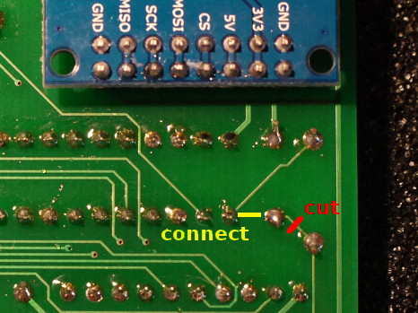
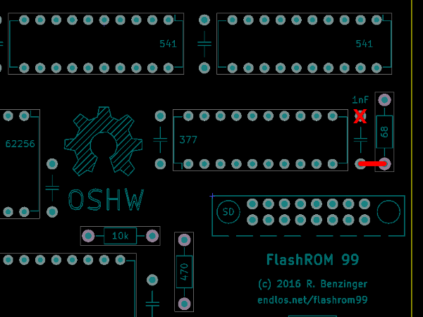

Revision 1 of the FlashROM 99 board had a small issue that resulted in unreliable disk access on some, but not all systems with certain disk controllers.
This document describes a simple fix that converts a Revision 1 board into a Revision 2 board that fixes the disk issue for all systems.
IMPORTANT: Make sure you have a Revision 1 board by checking the lower right-hand side of your cartridge board first!
Turn over your Revision 1 board and locate the traces that connect the capacitor to the resistor. You basically need to connect the end of the capacitor that is connected to the resistor to the other end of the resistor.

Fortunately, this is easily done: First, use an exacto knife to cut the trace marked by the red line. When done, use a volt meter to verify that the connection has been severed. Second, solder a short wire between the pins marked by the yellow line.
These two steps will fix the flaky disk access of your Revision 1 board.
If you haven't assembled your cartridge yet there's an alternative to cutting traces, but either method will work.
Assemble the board as usual, except for the 1 nF capacitor. Connect one wire of the capacitor to its regular terminal, but connect the other wire to the resistor instead.

If you find it difficult to connect the capacitor to the resistor you may also put either component on the backside of the cart.
This placement will prevent flaky disk access for your Revision 1 board.
You do not need to perform either modification if you don't use programs that access the disk drives, or if you do not experience any issues on your already assembled board!
Thanks go to Jim Fetzner for pointing out the flawed wiring in Revision 1.